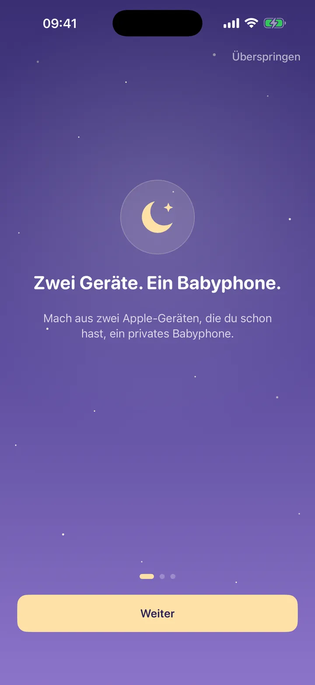
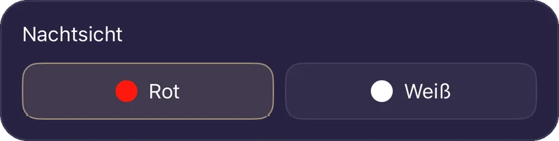

Baby monitor gratis. Lo vedi solo tu.
LaLeLu trasforma il tuo iPhone, iPad e Mac in un baby monitor privato con videocamera. Gratis, senza abbonamento, senza account. Crittografato end-to-end.
Per iPhone, iPad e Mac. Servono due dispositivi Apple.

- Gratis – 0 €
- Senza abbonamento
- Senza account
- Senza pubblicità
- Senza tracciamento
Baby monitor con video.
Tutte le funzioni gratis.
Un dispositivo resta nella cameretta come unità bimbo, l’altro diventa l’unità genitori. Combina iPhone, iPad e Mac come preferisci.
- Video e audio in direttaCon il Wi-Fi e in giro con i dati mobili.
- Visione notturnaLo schermo dell’unità bimbo diventa una lampada.
- Allarme pianto sul dispositivoCome notifica push, anche a schermo bloccato.
- InterfonoPremi e parla, senza alzarti.
- Suoni per dormire con timerRumori, pioggia e oceano.
- Cronologia delle attivitàResta in locale sul tuo dispositivo.
Luci spente.
Visione notturna accesa.
L’unità bimbo resta nella cameretta al buio. In modalità notte il suo schermo è quasi nero, mentre la trasmissione continua.
Con la visione notturna il suo schermo diventa una lampada soffusa, rossa o bianca. La luce rossa tende a disturbare meno il sonno.
Puoi attivare e disattivare la visione notturna anche dal tuo iPhone, senza entrare nella stanza.


Il tuo bimbo piange.
Il tuo iPhone lo sa.
Il riconoscimento del pianto avviene interamente sull’unità bimbo, con Apple SoundAnalysis. Quando sente pianto o tosse, ricevi una notifica push, anche a schermo bloccato. Per questo nessun audio va nel cloud.

Una parola dolce.
Senza alzarti.
Tieni premuto «Parla» e la tua voce arriva nella cameretta. Lascia, e torna il silenzio.

Provalo: tieni premuto «Parla».
Rumore acceso.
Timer in corso.
Rumore bianco, rosa e marrone, più pioggia e oceano. Avvii i suoni dal tuo iPhone.
Il timer gira sull’unità bimbo stessa e abbassa il suono con dolcezza, anche se nel frattempo l’iPhone perde la connessione.
Scegli 15, 30, 45 o 60 minuti, oppure senza fine.
Il tuo vecchio Mac
ha un nuovo lavoro.
Mettilo nella cameretta: con la videocamera integrata o una collegata diventa l’unità bimbo. Il tuo iPhone è l’unità genitori.


1–2 secondiÈ il tempo che serve di solito a casa per connettersi. In giro con i dati mobili, spesso qualche secondo.
Combina liberamenteiPhone, iPad o Mac nella cameretta, iPhone o iPad con te. Un vecchio iPhone basta come unità bimbo.
Per entrambi i genitoriPiù unità genitori possono essere collegate contemporaneamente, anche con ID Apple diversi.
Baby monitor privato:
nessun altro guarda.
- Crittografato end-to-end.
- Video e audio viaggiano direttamente tra i tuoi dispositivi (WebRTC, DTLS-SRTP). Solo i dispositivi che hai abbinato tu possono vedere l’immagine.
- Mai registrato.
- Video e audio non vengono salvati su alcun server né in modo permanente nell’app.
- Riconoscimento sul dispositivo.
- L’analisi dei suoni avviene in locale con Apple SoundAnalysis. Nessun audio viene inviato a noi.
- Senza account, senza pubblicità, senza tracciamento.
- Per l’abbinamento serve solo l’accesso iCloud che hai già.
Per essere onesti: LaLeLu si appoggia ad Apple (iCloud, notifiche push) e a Cloudflare per stabilire la connessione e inviare l’allarme. Che cosa viene salvato e per quanto tempo è descritto per esteso nell’informativa sulla privacy (in inglese).
Baby monitor senza abbonamento e senza account
Molte app baby monitor chiedono un abbonamento, un acquisto per ogni dispositivo o un account dedicato. LaLeLu no.
| Criterio | LaLeLu | App baby monitor più comuni |
|---|---|---|
| Prezzo | Gratis, per tutti i dispositivi | spesso un abbonamento o un acquisto per piattaforma |
| Account / registrazione | Nessuno, solo il tuo accesso iCloud esistente per l’abbinamento | spesso serve un account dedicato |
| Pubblicità e tracciamento | Senza pubblicità, senza SDK di tracciamento | a volte pubblicità o analisi dei dati |
| Video e audio | Crittografati end-to-end, mai registrati | a volte salvati o elaborati su server cloud |
| Riconoscimento del pianto | Sul dispositivo, nessun audio nel cloud | a volte solo una soglia di volume o un’analisi cloud |
| Dispositivi | iPhone, iPad e Mac, da combinare liberamente | spesso una sola piattaforma |
Il confronto descrive differenze generali del mercato, non una singola app.
Pronto in pochi minuti
- Scarica.Installa LaLeLu su entrambi i dispositivi dall’App Store.
- Scegli.Scegli «Unità bimbo» sul dispositivo nella cameretta e «Unità genitori» sull’altro.
- Abbina.Abbinali con un link o un codice QR. Fatto.
Baby monitor: domande frequenti
Questa app baby monitor è davvero gratis, senza abbonamento?
Sì. LaLeLu è un’app baby monitor gratis, senza abbonamento, senza pubblicità e senza funzioni a pagamento. Non c’è nessuna prova che scade.
Serve un account per usare LaLeLu?
No. LaLeLu non ha un account proprio né una registrazione. Per abbinare una volta i due dispositivi, l’app usa l’accesso iCloud che hai già su iPhone, iPad o Mac.
Video o audio vengono registrati o salvati?
No. Video e audio vengono trasmessi in diretta, cifrati end-to-end (WebRTC, DTLS-SRTP), direttamente tra i tuoi dispositivi e non vengono registrati su nessun server né nell’app. Se una connessione diretta non è possibile, il flusso, sempre cifrato, passa da un relay Cloudflare che non può decifrarlo.
Di quali dispositivi ho bisogno per un baby monitor con telecamera?
Di due dispositivi Apple: uno resta nella cameretta come unità bimbo (iPhone, iPad o Mac con fotocamera e microfono), l’altro è l’unità genitori (iPhone o iPad). Un vecchio iPhone basta come unità bimbo. Android non è supportato.
Posso usare il mio Mac come baby monitor?
Sì. L’app per Mac funziona come unità bimbo con la fotocamera integrata o una collegata e il microfono. Resta nella cameretta mentre il tuo iPhone fa da unità genitori.
Funziona anche fuori casa, con la rete mobile?
Sì. Si collega sulla stessa rete Wi-Fi e anche con la rete mobile o altre reti. Entrambi i dispositivi devono avere una connessione internet. A casa la connessione richiede di solito da uno a due secondi, fuori casa spesso qualche secondo.
Come funziona il riconoscimento del pianto?
Il riconoscimento dei suoni gira interamente sull’unità bimbo con Apple SoundAnalysis. Nessun audio viene inviato al cloud per l’analisi e nulla viene raccolto per l’addestramento. Quando l’app sente pianto o tosse, ricevi una notifica.
Ricevo l’avviso anche con l’iPhone bloccato?
Sì. L’avviso arriva come notifica push anche con lo schermo bloccato. Consenti le notifiche per LaLeLu nelle impostazioni dell’iPhone.
Come abbino l’unità bimbo e l’unità genitori?
Sul dispositivo del bimbo crei un link di abbinamento o un codice QR e lo apri o lo inquadri sul dispositivo dei genitori. Bastano pochi minuti. Il link è la chiave dell’abbinamento: condividilo solo con persone di fiducia.
Si possono collegare più unità genitori contemporaneamente?
Sì. Più unità genitori possono essere collegate nello stesso momento, così entrambi i genitori restano informati, anche con ID Apple diversi.
Aiuto e assistenza
Domande, feedback o bisogno di aiuto? Scrivi direttamente allo sviluppatore, risponde una persona vera: moritz.wolf@a1.net. Nell’app trovi anche «Segnala un problema / Feedback».
Il tuo baby monitor è già in tasca.
Scarica LaLeLu gratis e configura il tuo baby monitor privato in pochi minuti.
Scarica gratis dall’App Store